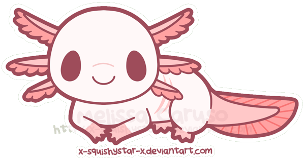
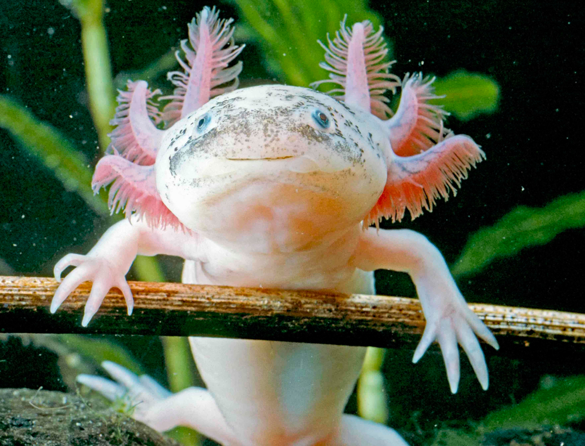
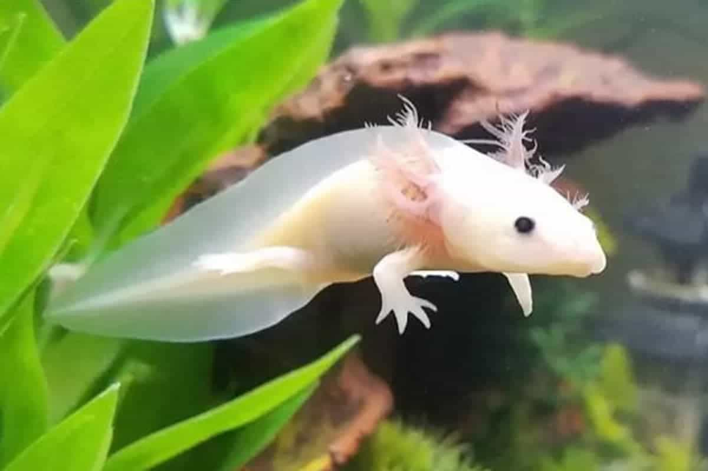
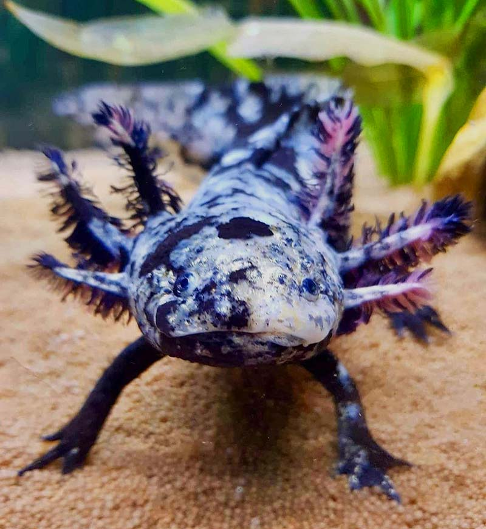
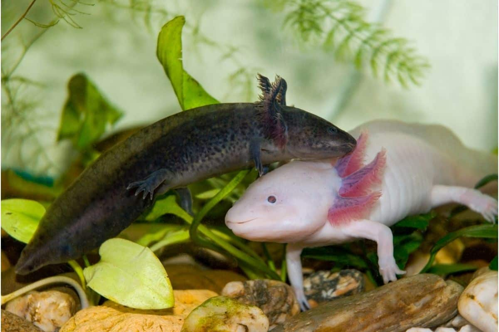

Axolotl Latest News
Axolotl Habitat
Axolotl Biology
Axolotls are awesome
Axolotls are carnivorous amphibians usually found in lakes in Mexico. Click below to explore more about axolotls!
Learn more!
Axolotl Fun Facts

Axolotls have the uncanny ability to regrow any limb or organ!

Axolotls retain their infant characteristics into adulthood.

Axolotls can appear in 18 different types of colors!

The name Axolotl translates to "water dog" in Mexican.
I can regenerate any limb or organ, I like to eat worms and other bugs, and I'm super kawaii!
- Anonymous Axolotl.
Help save the Axolotls!
As of 2020, Axolotls are considered as an endangered species. Click right over there to find how you can help out!
Help Out!